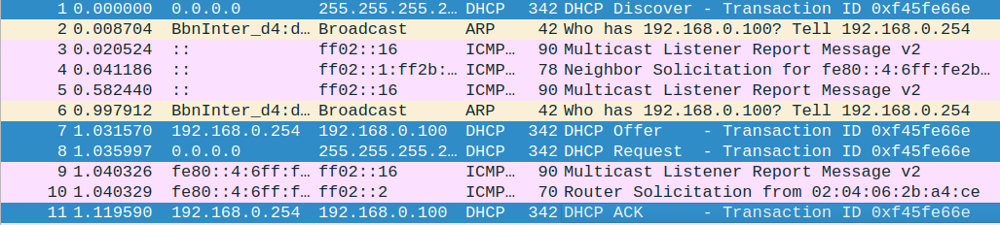
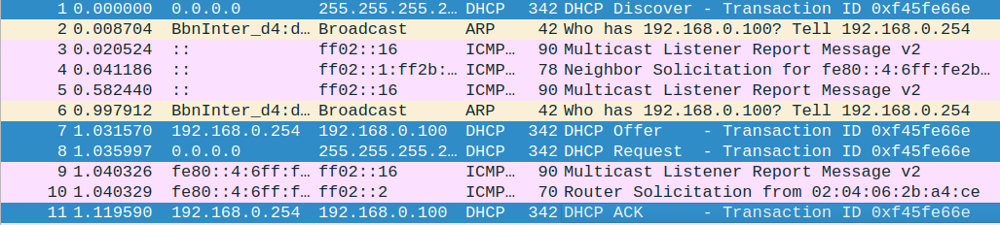
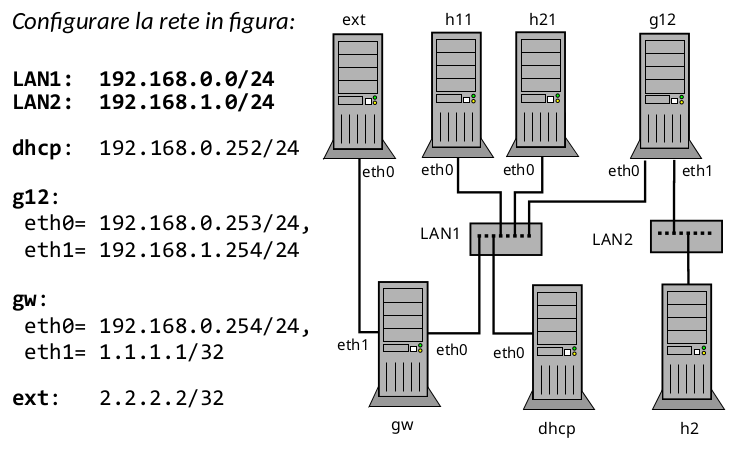

DHCP, 12-12-22
Lecture Info
Table of Contents
1 DHCP
1.1 Introduzione al funzionamento
Protocollo applicativo basato su UDP e serve a configurare il livello 3 dei client.
DHCP è quindi un protocollo diffuso per la configurazione automatica degli host.
I router, essendo dei componenti fondamentali, solitamente vengono configurati manualmente. E' rischioso configurare un router con algoritmi automatici.
L'amministratore di rete è il responsabile della scrittura delle policy del server DHCP, i client poi si connetteranno per ottenere le informazioni necessarie alla loro configurazione.
Un'obbiettivo è avere un'architettura scalabile: in una rete potrebbero essere presenti più server DHCP, per avere maggiore resilienza. Questo comporta anche l'implementazione di meccanismi aggiuntivi per il riconoscimento del server adatto alla configurazoine, nel caso in cui ce ne siano più di uno.
Non avendo a disposizione il livello IP per comunicare (non essendo ancora configurato), i client inviano dei messaggi broadcast per capire se nella rete c'è un server DHCP in ascolto.
- Cosa succede se la rete è divisa in molte sottoreti?
\(\rightarrow\) Potrei inserire un server DHCP per ogni sottorete.
L'amministratore in questo caso non può più configurare le policy in un'unico database centralizzato.
1.2 Policy di rete
Le regole elencate sono persistenti al riavvio dei server e dei client.
- assegnazione degli indirizzi IP;
- regole aggiuntive (regole di routing, nomi degli host…)
- comunicazione dei local name server;
- altre regole "statiche" di varia natura. Uno stesso host, ad esempio, può avere sempre lo stesso indirizzo IP.
Spesso si usano dei protocolli per capire se le assegnazioni automatiche creano dei conflitti nella rete.
1.3 Paradigma client/server
- Porta UDP 67: porta su cui il
serverrimane in ascolto; - Porta UDP 68: porta su cui il
clientrimane in ascolto;
In questo caso quindi ci sono delle porte note ben specificate. Il server non è in grado di selezionare il destinatario in base all'indirizzo IP. Quindi quello che fa è inviare i dati a tutti i client presenti su quella rete.
1.4 Pacchetto DHCP

- op: specifica se il pacchetto contiene una risposta o una richiesta;
- xid: serve a comunicare l'ID della transazione, è una sorta di "identificatore di flusso", simile a quello di TCP, anche se DHCP non è orientato alla connessione. Questo campo viene scelto dal client quando inizia la comunicazione con il server.
- ciaddr: campo con cui il client può "richiedere" uno specifico indirizzo.
- yiaddr: campo con cui il server comunica le proposte.
- siaddr: se esistono più server (server ridondanti), indica il prossimo server da utilizzare.
- chaddr: campo che contiene l'indirizzo hardware del client. E' ridondante, ma serve per il corretto funzionamento del protocollo.
Il pacchetto DHCP è fortemente estendibile, in base alle esigenze.
Ecco alcuni esempi di messaggi da parte del client: Alcune precisazioni:
- DECLINE: pensata per gestire dei conflitti tra indirizzi IP. A volte il client può effettuare una verifica tramite comunicazioni simili a quelle relative al protocollo ARP.
- RELEASE: usato se un client si sta disconnettendo in maniera "fair".
1.5 Workflow più comune
- DISCOVER (op = 1), usando l'indirizzo 255.255.255.255 e decidendo il transaction ID.
- OFFER (op=2), proponendo un'indirizzo. Nel caso può testarlo per verificare se genera dei conflitti. Solitamente l'offerta è già un messaggio IP Unicast, che viene accettata dal client che non ha ancora IP configurato. Questo messaggio è già un'ulteriore test: se esiste già un client con quell'indirizzo potrebbe mandare una segnalazione al server dicendo che quell'ip non va bene.
- REQUEST (op = 1) Messaggio unicast in cui viene chiesta conferma al server dell'ip proposto. Se il client in qualche modo si ricordava della configurazione su quella rete, può partire direttamente con l'invio di questo pacchetto.
- AKC (op = 2), viene confermato il binding.
Il transaction ID non permette a degli host malevoli che fanno girare un server DHCP di "spammare" in anticipo delle richieste, per battere in velocità il server legittimo.
2 Laboratorio
2.1 Esempio semplice
Mettiamo che alice sia connessa a un router (l'ip va configurato manualmente, 192.168.0.254/24) tramite uno switch. Per configurare il server dhcp, si modifica /etc/dhcp/dhcpd.conf. Le due "option" di default servono a dare a chi manda delle richieste delle informazioni aggiuntive. La seconda specifica i name-server, mentre la prima specifica il nome di dominio. attualmente possono essere commentate.
opzioni riguardo al timing delle regole:
2.1.1 Configurazione server dhcp
Il blocco "subnet" serve per l'effettiva configurazione del server dhcp.
Deve necessariamente essere presente una regola per la rete a cui il server
appartiene. Con range si crea una policy di assegnazione dinamica da usare
per le richieste.
Con option routers si inserisce l'informazione riguardo il default gateway:
spesso lo stesso router implementa il server dhcp.
subnet 192.168.0.0 netmask 255.255.255.0{
range 192.168.0.100 192.168.0.200;
option routers 192.168.0.254;
}
Per far partire il server, si usa
service isc-dhcp-server start
Informazioni riguardo malfuzionamenti si possono trovare in questo file:
/var/log/syslog
Per vedere lo stato del server in esecuzione:
ss -ulp
In alcuni campi si può trovare la dicitura *:bootps: questo perchè
il protocollo bootstrap è il predecessore di dhcp, e successore di
rarp.
2.1.2 Connessione del client
Per salvare il traffico in una directory condivisa con l'host all'interno di marrionet, si usa il seguente comando:
tcpdump -ni eth0 -w /mnt/hostfs/dump.pcap
- Per eseguire in client dhcp su linux si usa:
dhclient -i eth0
se tutto è andato correttamente, l'host dovrebbe aver acquisito (in questo caso) l'indirizzo 192.168.0.100 e la regola di routing che specifica il default gateway.
Esiste anche un file di configurazione per il client dhcp, ossia /etc/dhcpt/dhclient.conf,
per approfondimenti.
2.1.3 Analisi del traffico
A questo punto ci si posiziona sulla cartella /tmp/marionnet-425468945.dir/dhcp/hostfs/2 (o qualcosa
di simile, dipende dalla macchina) e si apre con wireshark il file che
contiene il traffico di rete catturato prima.
Si nota come il server dhcp (dopo la DHCP Discover) testi l'indirizzo IP che sta offrendo
tramite il protocollo ARP:
Dopo l'ultimo ACK viene fatto un'ultimo controllo dal server: viene effettuato
un check sia a livello 2 che a livello 3, usando ping:
 Da notare anche il transaction ID uguale per tutti i messaggi DHCP:

Da notare anche il transaction ID uguale per tutti i messaggi DHCP:

2.1.4 Relay agent
Servizio aggiuntivo da configurare su tutte le reti locali su cui si vuole che il server centralizzato distribuisca le informazioni. Inoltra le richieste di discovery ai server DHCP come messaggi UNICAST.
Per farlo bisogna specificare l'indirizzo IP del server DHCP tramite il file /etc/default/isc-dhcp-relay. Talvolta si può installare sul router stesso un servizio di relay agent: ossia un processo che se riceve una discovery la inoltra al server DHCP. Può anche essere una macchina dedicata, ma raramente.
Per configurare il relay agent si modifica il file /etc/default/isc-dhcp-relay Basta aggiungere la linea:
SERVERS="192.168.0.254"
Per eseguire il relay agent si usa:
service isc-dhcp-relay start
2.2 Esercizio
La configurazione da analizzare è la seguente: 
dhcp:
- si configura l'indirizzo in modo statico;
- gw come default gateway
- g12 per raggiungere lan2